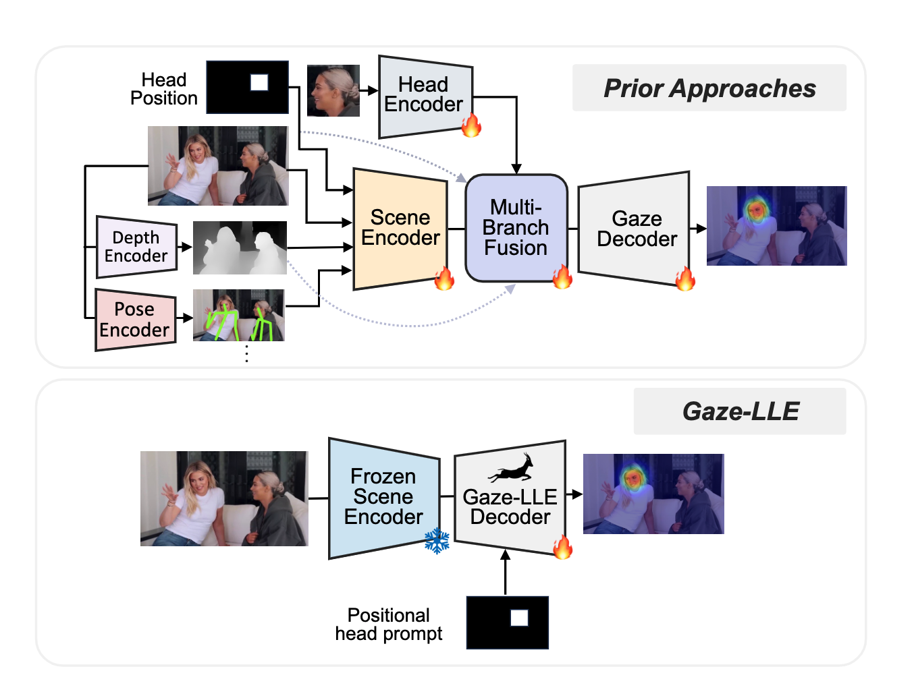
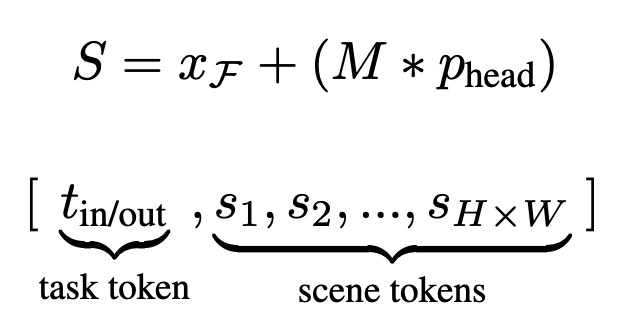
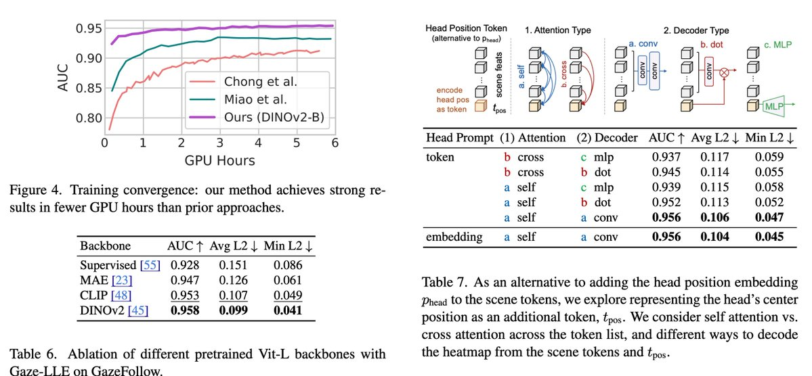
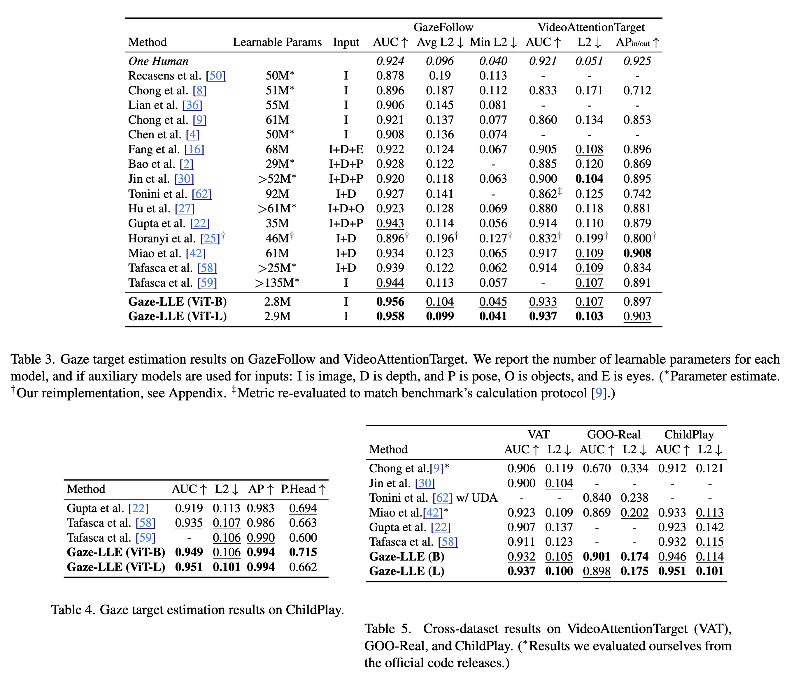

Gaze-LLE
Gaze Target Estimation via Large-Scale Learned Encoders
What if I tell you you can train a SOTA Gaze estimation model in an hour on an RTX4090 GPU? Too good to be true? I was also skeptical of that claim made in the Gaze-LLE paper, but it is true. DINOv2 FTW!

Problem Statement
Given an RGB image and the bounding box for a person’s head in the image, predict a heatmap \(H ∈ [0, 1]\), where each value represents the probability that the pixel is a gaze target. Optionally, predict \(y ∈ [0, 1]\) if the gaze target is inside the frame.
Model Architecture
- Consists of a scene encoder and a gaze decoder module.
- The scene encoder is frozen, and the decoder is trainable. The gaze decoder performs head prompting to condition outputs on a particular person, updates the feature representation with a small transformer module, predicts a gaze heatmap, and (optionally) if the target is in-frame.
- Though the Gaze-LLE framework is flexible enough to incorporate any feature extractor, the authors use DINOv2 as the scene encoder for extracting features. The feature map obtained \((d_f \times H \times W)\) is then projected using a linear layer to a smaller dimension d_model resulting in a feature map of size \((d_{model} \times H \times W)\).
- The head position is incorporated after the scene encoder. It provides the best performance compared to inserting it before the scene encoder. The authors construct a downsampled, binarized mask \(M\) of size \((H \times W)\) from the given head bounding box \(x_{bbox}\) within the extracted scene feature map. They also add a learned position embedding to the scene tokens containing the head resulting in a final scene feature map as shown below.

The scene feature maps are then flattened into a list of scene tokens \([s1, s2, ...]\). If the in/out frame prediction is necessary for a person’s gaze prediction, a learnable task token \(t_{in/out}\), is also prepended to the token list. 2D sinusoidal positional encodings are added to these tokens and are fed into a trainable 3-encoder-layer transformer.
The output feature map S’ from the transformer is reconstructed into a feature map of size (d_model x H x W), which is then passed to the gaze heatmap decoder \(D_{hm}\). \(D_{hm}\) consists of 2 convolutional layers to upsample the feature map to the output size \((H_{out} \times W_{out})\) and produce a classification score for each pixel as being a gaze target or not. A 2-layer MLP \(D_{in/out}\) takes \(t_{in/out}\) and outputs a classification score for if the person’s gaze target is in or out of frame.
Training Objective
- pixel-wise binary cross-entropy for the heatmap
- If gaze in/out of the frame is also to be detected, then a binary cross-entropy loss for the in/out prediction task weighted by \(λ\) is also used.
Experimental Details
- Datasets: GazeFollow, VideoAttentionTarget, ChildPlay, and GOO-Rea
- AUCROC metric, pixel \(L2\) loss
- DINOv2 with ViT-B and ViTL backbones, patch size=14, \(d_{model}=256\), 3 transformer layers with 8 attention heads, and MLP dimension 1024.
- Adam optimizer with \(lr=10^{-3}\) and batch_size=60, and 15 epochs
- Random crop, flip, and bounding box jitter as data augmentation and drop path regularization with \(p=0.1\)
- For VideoAttentionTarget, they fine-tuned it for 8 epochs with lr=1e-2 (in/out params), lr=1e-5 (for other gaze decoder params), and \(λ=1\).
- For ChildPlay, they fine-tuned it for 3 epochs with lr=2e-4 and 1e-4 and \(λ = 0.1\).
- The model achieves SOTA in less than 1.5 hours on a single RTX4090 GPU
Interesting findings
- Straightforward substitution of DINOv2 into prior gaze architectures leads to poor performance. The authors find that concatenating the head position channel after extracting DINOv2 features boosts performance significantly compared to retraining the input projection to accept it as an additional channel.
- Without head prompting, the model succeeds in single-person cases, but cannot effectively condition gaze target estimation on the correct person in multi-person scenarios.
- A separate head branch with DINOv2 is unnecessary, though adding it boosts performance.
- A gaze decoder without transformer layers does not provide optimal performance.

Results
Here are the results of Gaze-LLE compared to the previous works:
